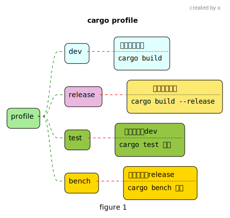

rust cargo
1 配置文件
1.1 项目下的Cargo.toml
发布的配置信息, 是预定义好的,可自定义
cargo build
Finished dev [unoptimized + debuginfo] target(s) in 0.0s
cargo build --release
Finished release [optimized] target(s) in 0.0s我们运行2个命令看看, 看到 dev 和 release, 实际就是使用了不同的默认配置 dev默认的一些配置
[profile.dev]
opt-level = 0
debug = true
split-debuginfo = '...' # Platform-specific.
strip = "none"
debug-assertions = true
overflow-checks = true
lto = false
panic = 'unwind'
incremental = true
codegen-units = 256
rpath = false我们可以通过修改Cargo.toml来覆盖一些默认配置
[package]
name = "world"
version = "0.1.0"
edition = "2021"
[dependencies]
rand = "0.8.5"
[profile.dev] # dev 配置
opt-level = 1
[profile.release] # release 配置
opt-level = 3修改完后, 我们再次编译可以看到 optimized
dependencies的三种方式
1.2 全局配置config.toml1
Caution
待完善
~/.cargo/config.toml影响该用户的所有 Rust 项目
安装 sccache2 编译加速
~/.cargo/config.toml
[source.crates-io]
replace-with = 'ustc'
[source.ustc]
registry = "sparse+https://mirrors.ustc.edu.cn/crates.io-index/"
[alias] # command aliases
b = "build"
c = "check"
t = "test"
r = "run"
rr = "run --release"
[build]
# 这样设置可以将所有的rust编译后的可执行文件放到一块去,哪天清理时比较方便
1target-dir = "/Users/xxxx/.rust-target"
# 使用 sccache 进行编译加速
rustc-wrapper = "/Users/xxxx/.cargo/bin/sccache"- 1
- 路径自行配置, 使用绝对路径
2 常用命令
# 查看所有cargo 命令
cargo --list
# 添加 一个依赖项 (外部crate)
# 会在 Cargo.toml [dependencies] 下写入依赖的crate名以及它的版本
cargo add csv
# 工作空间下, 多package 的情况下,需要指定 package
cargo add csv --package test_csv
# --features derive 表示启用了serde 的derive 这个特性
# 启用后你可以在你的代码中使用 serde 宏来为你的数据结构自动生成序列化和反序列化的实现
cargo add serde --features derive3 文档
3.1 注释
生成HTML文档,显示如何使用API
我们 在src/lib.rs中添加一些文档注释
src/lib.rs
1//! # My Crate
//!
//! `my_crate` is a collection of utilities to make performing certain
//! calculations more convenient.
/// Adds one to the number given.
///
2/// # Examples
///
/// ```
3/// let arg = 5;
/// let answer = my_crate::add_one(arg);
///
/// assert_eq!(6, answer);
/// ```
pub fn add_one(x: i32) -> i32 {
x + 1
}- 1
-
描述 我们要发布的 整个crate, 使用
//! - 2
-
使用
///,可以用markdown语法
Example 是一个常见的我们要去写的区域,后面写上示例
Panics: 描述可能发生panic的场景
Errors: 如何函数返回Result,描述可能的错误种类,以及导致错误的条件
Safty: 如果函数处于unsafe调用, 那么就描述使用unsafe的原因和使用的前提 - 3
-
使用
cargo test会测试这里的代码, 注意 需要将 示例代码里使用的my_crate改成Cargo.toml中[package]的name
3.2 pub use
//! # Art
//!
//! A library for modeling artistic concepts.
// --加上这些--
1pub use self::kinds::PrimaryColor;
pub use self::kinds::SecondaryColor;
pub use self::utils::mix;
// -----
pub mod kinds {
/// The primary colors according to the RYB color model.
pub enum PrimaryColor {
Red,
Yellow,
Blue,
}
/// The secondary colors according to the RYB color model.
pub enum SecondaryColor {
Orange,
Green,
Purple,
}
}
pub mod utils {
use crate::kinds::*;
/// Combines two primary colors in equal amounts to create
/// a secondary color.
pub fn mix(c1: PrimaryColor, c2: PrimaryColor) -> SecondaryColor {
SecondaryColor::Orange
}
}- 1
- 这样生成的文档方便用户查看,不需要点击多次才能看到
4 发布crate到crate.io
4.1 登录crate.io获取token
4.2 修改Cargo.toml
[package]
1name = "guessing_game"
version = "0.1.0"
edition = "2021"
2description = "该描述会显示在crate.io的搜索结果里"
3license = "MIT OR Apache-2.0"
[dependencies]- 1
- 名字在crate.io中必须是独一无二的
- 2
- 必填项
- 3
- 必填项,许可标识值可在spdx上查找
4.3 发布
发布已存在crate的新版本, 需要修改 toml文件中的 version3, 再执行cargo publish 即可
4.4 cargo yank 撤回
- 首先
crate.io是不能让你删除已经发布的版本的,因为如果已经有人用了怎么办 - 但是可以让你撤回,它的意思是, 防止新的用户使用这个可能不太好的版本,
cargo add xxxx后不会使用到这个撤回的版本, 如果是已经使用了这个版本的人(Cargo.lock里指定了版本了), 还是可以下载使用的
5 工作空间 workspace
5.1 创建
- 1
-
这样一个member就是一个package, 我们可以这样在一个工作空间中创建多个package, 之前比如测试代码时我们可能会
cargo new xxx一个新的项目来进行测试,现在可以这样处理.
实际操作时,这里空着或者members=整个都不写就行,后面使用cargo new xxx会自动在这里添加 - 2
- resolver4
添加 一个binary package
添加一个 lib package
现在我们要在adder 中依赖add_one这个package,需要在adder/Cargo.toml中添加
adder/Cargo.toml
adder/src/main.rs
5.2 使用外部crate
adder/Cargo.toml[dependencies]中添加rand = "0.8.1",然后在add_one/Cargo.toml[dependencies]中添加rand = "0.8.5"后, cargo build 只会在外层Cargo.lock中生成一个rand版本.这样工作空间中的crate 都会使用同一个版本的rand
5.3 测试
6 一个package多个binary
7 安装二进制包
只能安装具有 binary target的 package (有binary crate)
8 自定义命令扩展
在系统中你可以直接运行的一个命令 名字是cargo-xxxx,那么你就可以运行cargo xxxx 这样来替代运行它, cargo --list 可以查看到.
我们在安装rust后, 可以在~/.cargo/bin 看到一些可执行文件, cargo-fmt 就是其中的一个, 我们可以发现有cargo fmt这个命令,就像cargo 的内置命令一样